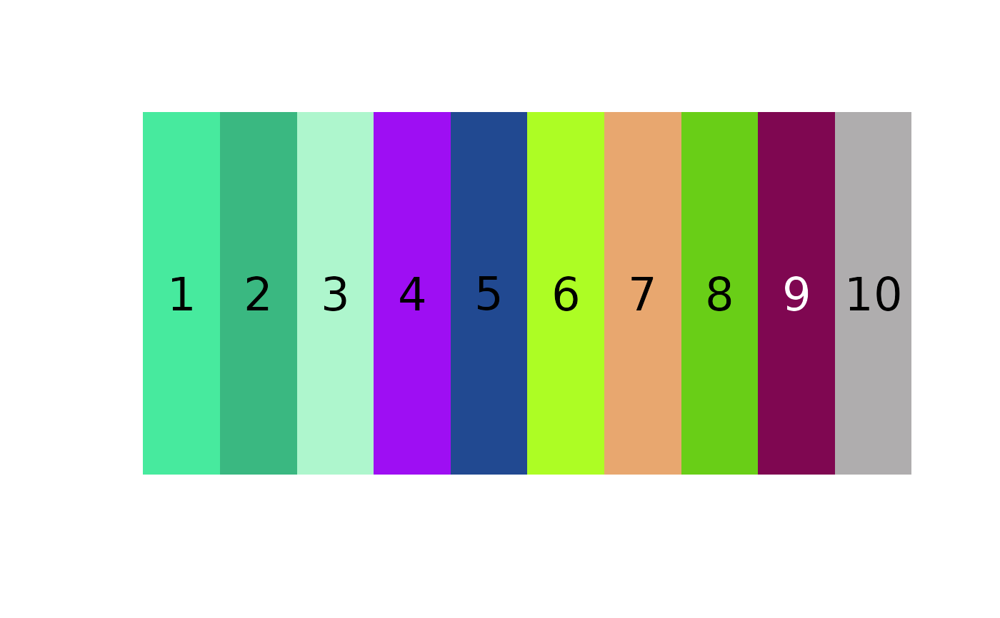
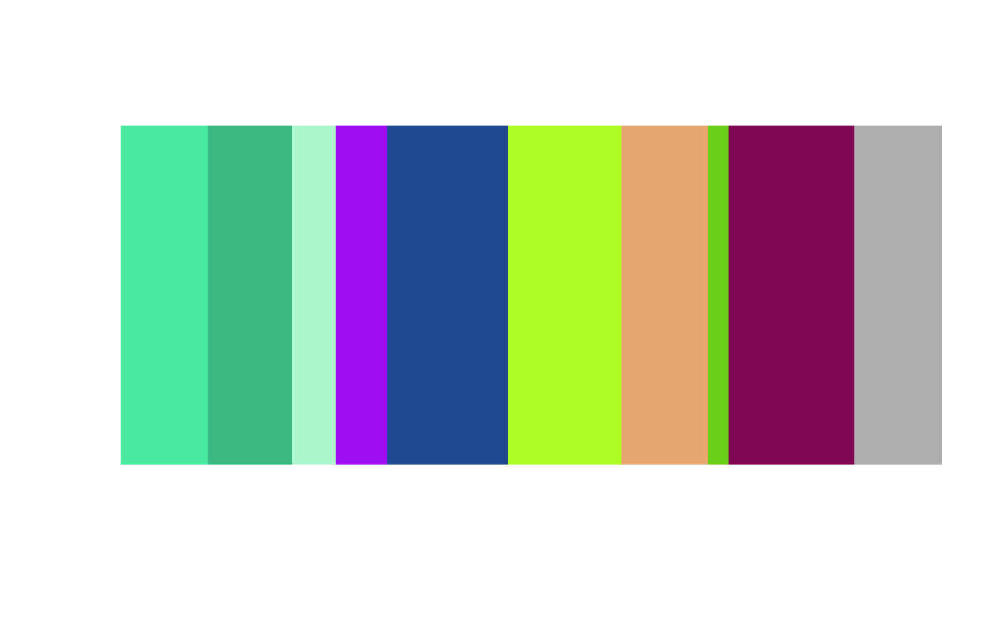
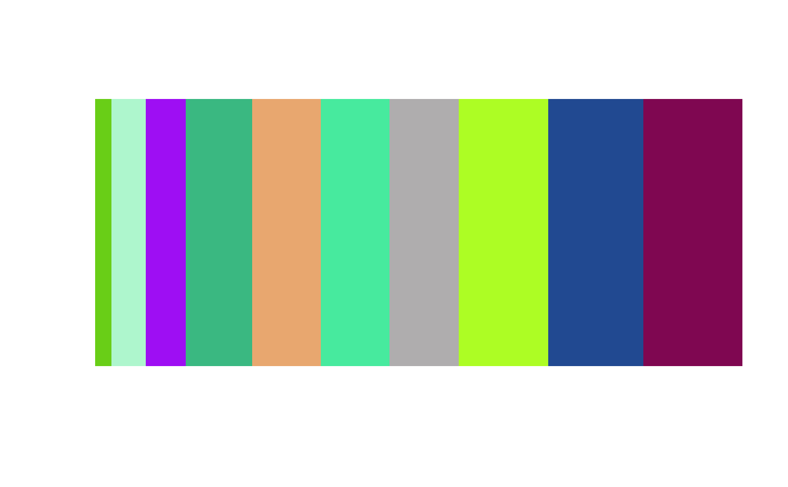
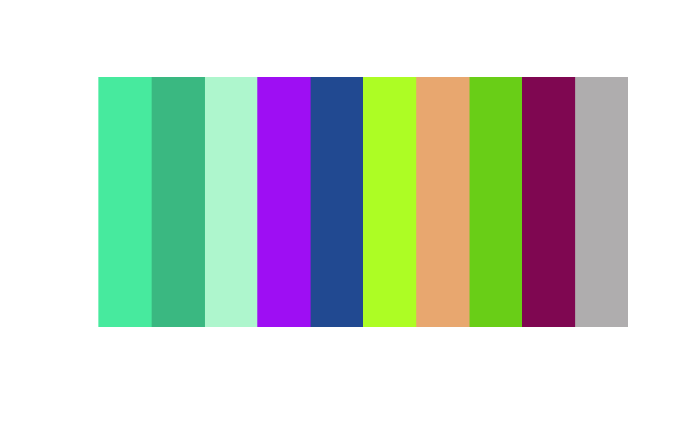

Plots a color palette as a single bar, optionally scaling each color to a vector of sizes.
Arguments
- centers
Colors to plot in palette. Accepts either a character vector of hex codes or an n x 3 matrix (rows = colors, columns = channels). Assumes RGB in 0-1 range.
- sizes
An optional numeric vector of sizes for scaling each color. If no sizes are provided, colors are plotted in equal proportions.
- cex_text
Size of the numbers displayed on each color, relative to the default. Passed to
graphics::barplot(). Text is only plotted ifsizes = NULL.cex_text = 0will remove numbering.- horiz
Logical. Should the palette be plotted vertically or horizontally?
- ...
Additional parameters passed to
graphics::barplot().
Details
plotColorPalette does not reorder or convert colors between color spaces,
so users working in other colorspaces should convert to RGB before plotting.
Examples
# plot 10 random colors
rand_colors <- matrix(runif(30), ncol = 3)
plotColorPalette(rand_colors)

# plot 10 random colors with arbitrary sizes
sizes <- runif(10, max = 1000)
plotColorPalette(rand_colors, sizes = sizes)

# reorder to plot smallest to largest
size_order <- order(sizes)
plotColorPalette(rand_colors[size_order, ],
sizes[size_order])

# plot a vector of hex colors, turn off numbering
hex_colors <- rgb(rand_colors)
plotColorPalette(hex_colors, cex_text = 0)
